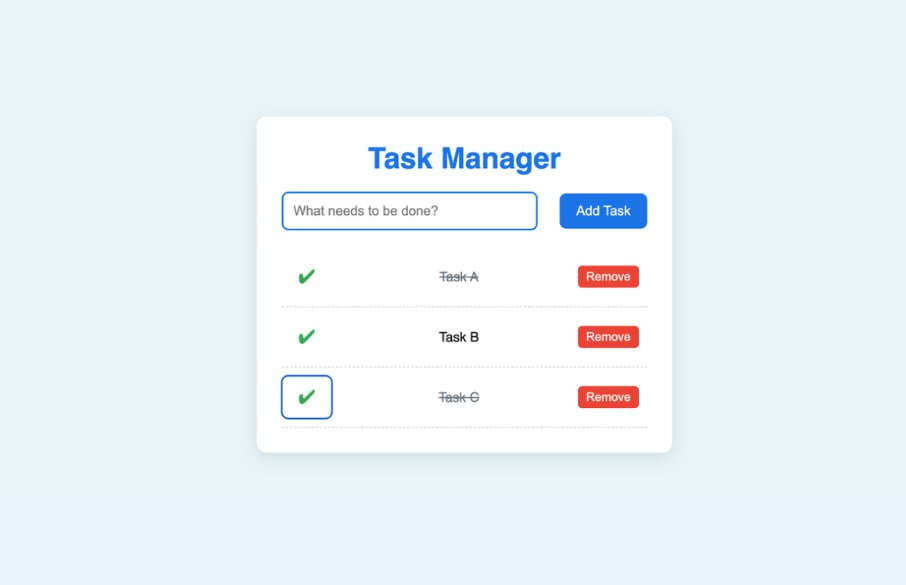
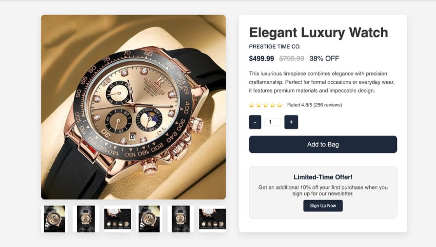

Figma dizaynni Tailwind CSS'da
nol qiymatdan yig'ish
Sizga hozir shunday vaziyat kelib tushdi deb tasavvur qiling: mijoz Figma havolasini yuboradi va aytadi — «ana shu dizaynni saytga aylantirib bering, ertaga kerak». Hech qanday tayyor kod yo'q, faqat rasmlar va o'lchamlar. Bugun siz aynan shu muammoni hal qiladigan aniq, tartibli ish jarayonini (workflow) — Figma'dan tayyor, responsive Tailwind kodigacha — bosqichma-bosqich real loyiha ustida qo'llaysiz.
Dars oxirida siz nima qila olasiz
Video oxirida siz real Figma maketini (yoki undan olingan skrinshotni) Dev Mode paneli mantig'i orqali tahlil qilib, undan olingan o'lcham, rang va assetlar asosida to'liq bir sahifa blokini — navbar + hero + feature-kartochkalar — Tailwind CSS'da toza va tartibli kod bilan qura olasiz.
Tahlil qilasiz
Dizaynni ko'rgan zahoti uni flex qatorlarga, komponentlarga va bo'shliqlarga ajratib «o'qiy» olasiz.
Aniq qiymat olasiz
Inspect/Dev Mode panelidan piksel, rang va shrift qiymatlarini taxmin qilmay, aynan o'zini olib, Tailwind classiga aylantirasiz.
Real loyiha qurasiz
Navbar, Hero va feature-kartochkalarni real rasm-assetlar (logo, hero, ikonkalar) bilan bitta faylda yig'asiz.
Kodni toza tutasiz
Takrorlanadigan class to'plamini «shablon» sifatida ko'chirib, izchil konteyner patternini butun sahifa bo'ylab saqlaysiz.
Nazariya minimal — bugungi 15 daqiqaning katta qismi jonli kod yozishga sarflanadi. Bu, aslida, sizni real ish joyida kutayotgan aynan shu vazifa: 16-modulda esa sizga alohida, shaxsiy dizayn-brif beriladi va butun kursda o'rgangan hamma narsani birlashtirib, mustaqil yakuniy loyiha qurishingiz kerak bo'ladi.
Bir xil dizayn, ikki xil yo'l
12-modulda SCSS, 13–14-modullarda Tailwind'ning utility-first tezligini o'rgandingiz. Bugun aynan shu tezlikdan foydalanib, Figma'dan olingan bitta navbar'ni sof CSS bilan emas, balki to'g'ridan-to'g'ri Tailwind class'lari bilan — alohida CSS fayl yozmasdan — qurib olamiz.
<header class="header">
<img src="images/logo.png" class="logo">
<nav class="menu">
<p class="menu-text">Mahsulot</p>
<button class="singup">Ro'yxatdan o'tish</button>
</nav>
</header>.header {
display: flex;
justify-content: space-between;
align-items: center;
padding: 20px 0;
}
.menu { display: flex; align-items: center; gap: 24px; }<header class="flex justify-between items-center py-5">
<img src="images/logo.png" class="h-7">
<nav class="hidden md:flex items-center gap-8 text-sm">
<a href="#">Mahsulot</a>
<button class="bg-emerald-600 text-white px-4 py-2
rounded-lg">Ro'yxatdan o'tish</button>
</nav>
</header>Alohida CSS fayl yo'q, va hidden md:flex tufayli mobilda menyu avtomatik yashiriladi.
Figma bilan ishlash — Inspect / Dev Mode paneli
Real loyihada dasturchi hech qachon to'g'ridan-to'g'ri kod yozishdan boshlamaydi. Figma faylini ochib, o'ng panelda «Inspect» yoki «Dev Mode» bo'limi ko'rsatiladi — bu yerda istalgan elementni bosganda uning aniq o'lchami, rangi, shrift o'lchami va bo'shliqlari avtomatik ko'rsatiladi. Endi piksellarni ko'z bilan taxmin qilish shart emas — Figma sizga aniq raqamlarni beradi.
| Inspect panelida ko'rinadi | Tailwind classida ishlatiladi |
|---|---|
| Aniq piksel o'lchamlari (width/height) | w-10, h-7, max-w-6xl |
Rang kodi (HEX, masalan #059669) | bg-emerald-600 yoki bg-[#059669] |
| Shrift o'lchami va qalinligi | text-lg, font-semibold |
| Elementlar orasidagi bo'shliq (spacing/gap) | px-6 py-3, gap-8 |
| Burchak radiusi | rounded-lg, rounded-xl |
Biror qiymatni «ko'zga chiroyli ko'rinadi» deb o'zingizdan qo'ysangiz — bu dizayn bilan mos kelmasligi mumkin. Har doim Inspect panelidagi (yoki berilgan rasmdan imkon qadar aniq o'qilgan) asl qiymatni oling.
HEX rang → Tailwind palitrasi, asset eksport
Rangni Figma'da bosganda HEX kod nusxalanadi (masalan #059669). Buni keyin Tailwind'ning tayyor rang skalasidan eng yaqinini topib ishlatasiz (masalan emerald-600), yoki aynan mos kelmasa arbitrary value (bg-[#059669]) bilan yozasiz.
<!-- Figma Inspect'da ko'rgan qiymatlar: -->
<!-- Tugma: padding 12px 24px, border-radius 8px, rang #059669 -->
<button class="px-6 py-3 rounded-lg bg-emerald-600
hover:bg-emerald-700 text-white
font-semibold transition">
Ro'yxatdan o'tish
</button>Asset eksport
- SVG — logotip, ikonka kabi vektor grafikalar uchun.
- PNG — foni shaffof kerak bo'lgan rasmlar uchun.
- JPG — fotosurat, foni to'liq to'ldirilgan rasmlar uchun.
Figma'da elementni tanlab, pastdagi «Export» tugmasi shu formatlarda yuklab beradi. Bu darsda esa allaqachon tayyor logo.png, hero.png, icon-1.png–icon-4.png fayllaridan foydalanamiz — xuddi haqiqiy loyihada eksport qilingandek.
Figma'dagi har bir noyob rangni arbitrary value (bg-[#059f6c]) bilan aynan nusxalashga urinishadi. Bu konsistentlikni yo'qotadi — avval Tailwind'ning standart palitrasidan eng yaqinini tanlang, arbitrary value'ni esa faqat brend rangi standart skalada mutlaqo yo'q bo'lgandagina ishlating.
Real loyihani tahlil qilish metodikasi — qanday fikrlash kerak
Har qanday yangi maketni ko'rganingizda, kodlashni boshlashdan oldin o'zingizga quyidagi savollarni bering — bosqichma-bosqich. Bugun bitta SaaS-landing sahifasining bir necha bo'limini — Navbar, Hero va feature-kartochkalarni — aynan shu tartibda quramiz.
- Bu qator (row)mi yoki ustun (column)mi? Elementlar yonma-yon joylashganmi yoki tepa-past? Bu
flex-directionni aniqlaydi. - Qaysi qismlar takrorlanadi (komponent)? Masalan bir xil ko'rinishdagi kartochkalar yoki tugmalar. Ular uchun bitta ishonchli class to'plamini yozib, faqat mazmunini almashtiring.
- Rang, shrift, spacing qiymatlari qancha? Inspect panelidan (yoki berilgan rasmdan imkon qadar aniq) o'qing.
- Qaysi HTML tegi semantik jihatdan to'g'ri keladi?
header,nav,section,button. - Mobilda ko'rinish qanday o'zgaradi? Nima yashiriladi (
hidden), nimamd:dan boshlab paydo bo'ladi? - Rasm yoki ikonka kerakmi? Bo'lsa,
images/papkasidagi tayyor faylni ulang.
Ushbu ro'yxat keyingi slaydlarda — Navbar, Hero va Feature-kartochkalar ustida — aynan shu tartibda qo'llanadi.
Figma → Tailwind: 6 bosqichli ish oqimi (workflow)
Tahlildan keyingi qadam — struktura. Real loyihada quyidagi 6 bosqich har doim ketma-ket bosib o'tiladi:
1–2. Dizayn va tahlil
Oldingi slayddagi metodika: qator/ustunmi, qaysi qism takrorlanadi, rang/shrift qancha — kodlashdan oldin javob beriladi.
3–4. Struktura va Tailwind
Avval semantik HTML skeleti (header, section, footer) quriladi, keyin har bir elementga Tailwind utility class'lari yoziladi.
5–6. Tekshiruv va komponent
DevTools'da turli ekranlarda tekshiriladi, so'ng takrorlanadigan bloklar (kartochka, tugma) «shablon»ga aylantiriladi.
Keyingi slaydlarda Navbar, Hero va Feature-kartochkalar bo'limlari aynan shu 6 bosqich asosida quriladi.
Amaliy: Navbar — logo, menyu, tugmalar
Tahlil: logotip chapda, menyu havolalari o'rtada/o'ngda, ikkita tugma eng o'ngda — demak konteynerga flex justify-between items-center kerak. Mobilda menyuni yashirib (hidden), md:dan boshlab ko'rsatamiz (md:flex) — o'rniga mobilda burger tugma (md:hidden) chiqadi.
<header class="max-w-6xl mx-auto flex items-center
justify-between px-6 py-5">
<img src="images/logo.png" alt="Logo" class="h-7">
<nav class="hidden md:flex items-center gap-8
text-sm font-medium text-gray-600">
<a href="#" class="hover:text-gray-900 transition">Mahsulot</a>
<a href="#" class="hover:text-gray-900 transition">Narxlar</a>
<a href="#" class="hover:text-gray-900 transition">Sharhlar</a>
</nav>
<div class="hidden md:flex items-center gap-3">
<button class="px-4 py-2 rounded-lg border-2
border-gray-200 font-semibold text-sm
hover:border-gray-400 transition">Kirish</button>
<button class="px-4 py-2 rounded-lg bg-emerald-600
hover:bg-emerald-700 text-white
font-semibold text-sm transition">Ro'yxatdan o'tish</button>
</div>
<button class="md:hidden text-2xl">☰</button>
</header>hidden md:flex qo'yiladi, lekin burger tugmasi (md:hidden) qo'shilmaydi — natijada mobilda na menyu, na uni ochish imkoniyati ko'rinadi. Ikkalasi har doim juft ishlatilishi kerak.
Amaliy: Hero — sarlavha, tavsif, CTA, rasm
Tahlil: mobilda matn va rasm ustma-ust (flex-col), md:dan boshlab yonma-yon (md:flex-row); sarlavha o'lchami ham ekranga qarab o'sishi kerak (text-3xl md:text-5xl) — bu 11-modulda o'rgangan mobile-first tamoyilining Tailwind'dagi ko'rinishi.
<section class="max-w-6xl mx-auto px-6 py-16 flex
flex-col md:flex-row items-center gap-12">
<div class="flex-1 text-center md:text-left">
<h1 class="text-3xl md:text-5xl font-bold leading-tight
text-gray-900">
Fikringiz tezligida ishlang
</h1>
<p class="mt-4 text-gray-500 text-base md:text-lg">
Vositalar, darsliklar va dizayn ekspertlari — barchasi bir joyda.
</p>
<div class="mt-8 flex flex-col sm:flex-row gap-3
justify-center md:justify-start">
<button class="px-6 py-3 rounded-lg bg-emerald-600
hover:bg-emerald-700 text-white
font-semibold transition">Boshlash</button>
<button class="px-6 py-3 rounded-lg text-emerald-700
font-semibold hover:bg-emerald-50
transition">▷ Videoni ko'rish</button>
</div>
</div>
<div class="flex-1">
<img src="images/hero.png" alt="Mahsulot ko'rinishi"
class="w-full max-w-md mx-auto">
</div>
</section>text-3xl md:text-5xl — mobilda kichikroq shrift, katta ekranda kattaroq. Konteynerning max-w-6xl mx-auto px-6 py-16 patterni Navbar'dagi bilan bir xil — bu tasodif emas, keyingi bo'limlarda ham shu pattern takrorlanadi.
Amaliy: Feature bo'limi — 4 ta kartochka
Tahlil: 4 ta bir xil o'lchamdagi karta — bu grid uchun ideal holat. Har bir kartochka bir xil struktura: ikonka, sarlavha, matn. Hover'da yengil ko'tarilish effekti qo'shiladi.
<section class="max-w-6xl mx-auto px-6 py-16">
<h2 class="text-2xl md:text-3xl font-bold text-center
text-gray-900 mb-10">Aynan siz uchun yaratilgan</h2>
<div class="grid grid-cols-1 sm:grid-cols-2 lg:grid-cols-4 gap-6">
<div class="p-6 rounded-xl border border-gray-100
hover:shadow-lg hover:-translate-y-1 transition">
<img src="images/icon-1.png" alt="" class="h-10 mb-4">
<h3 class="font-semibold text-gray-900 mb-2">Birinchi bosim testlari</h3>
<p class="text-sm text-gray-500">Foydalanuvchi birinchi marta nimaga bosishini bilib oling.</p>
</div>
<!-- icon-2, icon-3, icon-4 bilan xuddi shu struktura takrorlanadi -->
</div>
</section>Har bir kartochka bir xil class to'plamiga ega — faqat rasm, sarlavha va matn farq qiladi. Buni «shablon» sifatida qanday ko'chirish kerakligini 13-slaydda batafsil ko'ramiz.
Pricing, Testimonials, Footer — bir xil pattern bilan davom etadi
Real loyihada landing sahifa Navbar/Hero/Cards bilan tugamaydi — lekin qolgan bo'limlarning har biri aynan shu 6 bosqichli metodika bilan quriladi, faqat joylashuv turi farqlanadi:
Pricing
grid grid-cols-1 md:grid-cols-3 gap-6 — 3 ta reja, o'rtadagisi border-2 border-emerald-600 shadow-xl bilan ajratiladi.
Testimonials
grid grid-cols-1 md:grid-cols-3 gap-6 — mijoz fikri kartochkalari, avatar o'rniga rangli doira + bosh harf.
Footer
grid grid-cols-2 md:grid-cols-4 gap-8 — logo+tavsif va havolalar guruhlari, pastda copyright qatori.
Barchasini yig'ganda, real loyihada bo'limlar shunchaki ketma-ket, bitta semantik skelet ichiga joylashadi:
<body class="text-gray-800">
<header class="max-w-6xl mx-auto flex ..."><!-- Navbar --></header>
<section class="max-w-6xl mx-auto px-6 py-16 flex ..."><!-- Hero --></section>
<section class="max-w-6xl mx-auto px-6 py-16"><!-- Feature-kartochkalar --></section>
<section class="max-w-6xl mx-auto px-6 py-16"><!-- Pricing --></section>
<section class="max-w-6xl mx-auto px-6 py-16"><!-- Testimonials --></section>
<footer class="border-t border-gray-100"><!-- Footer --></footer>
</body>Har bir bo'limda takrorlanadigan max-w-6xl mx-auto px-6 py-16 — bu tasodif emas, 12-slaydda buni «izchil konteyner pattern» sifatida ko'ramiz.
Jonli natija: to'liq sahifani sinab ko'ring
Pastda yuqorida qurgan uchta bo'lim (Navbar + Hero + Feature-kartochkalar) real rasm-assetlar bilan birga to'liq ishlaydi. Kodni o'zgartiring — matnni, rangni yoki grid ustunlar sonini almashtirib ko'ring.
lg:grid-cols-4ni lg:grid-cols-2ga, bg-emerald-600ni bg-indigo-600ga o'zgartiring — natija darhol yangilanadi.
DevTools bilan responsiv tekshiruv — 375 / 768 / 1280
Har bir bo'lim qurilgach, uni darhol uch xil kenglikda tekshirish — professional dasturchining kundalik odati.
- DevTools'ni oching (F12 yoki Cmd+Opt+I) va «Device Toolbar»ni yoqing.
- 375px'da tekshiring — navbar burger tugmasi chiqyaptimi, matn siqilib qolmayaptimi?
- 768px'da tekshiring —
md:breakpoint atrofida joylashuv birdaniga o'zgarishini kuzating. - 1280px'da tekshiring — konteyner
max-w-6xlda to'xtab, ekranning qolgan qismi bo'sh (yoki fon rangi bilan) qolyaptimi? - Gorizontal skroll yo'qligini tasdiqlang — istalgan kenglikda sahifa yon tomonga siljimasligi kerak.
Aksariyat «responsiv emas» xatolar aynan 375–420px oralig'ida ko'zga tashlanadi. Faqat kattaroq monitorda tekshirib, «chiroyli ko'rinyapti» deb xulosa chiqarmang — bu keyingi vazifaning ham baholash mezoni.
Kodni optimallashtirish va toza arxitektura
9–10-modullarda gradient-kartochka va spinner/modal komponentlarini yaratganda «bir xil ko'rinishga bitta umumiy CSS class» degan DRY qoidasini qo'llagan edingiz. Tailwind'da alohida class yozilmagani uchun bu qoida boshqacha ko'rinishda qo'llaniladi: butun class to'plamini «shablon» (reusable pattern) sifatida ko'chirasiz.
<div class="p-6 rounded-xl border border-gray-100
hover:shadow-lg hover:-translate-y-1 transition">
<img src="images/ICON.png" class="h-10 mb-4">
<h3 class="font-semibold text-gray-900 mb-2">SARLAVHA</h3>
<p class="text-sm text-gray-500">MATN</p>
</div>Feature-kartochkaning butun class ro'yxatini bir marta ishonchli yozib, keyin har bir yangi kartochka uchun shu blokni butunligicha nusxa ko'chirasiz — faqat ikonka, sarlavha va matnni almashtirasiz.
<section class="max-w-6xl mx-auto px-6 py-16">
...
</section>Yana bir muhim arxitektura odati: har bir section uchun bitta standart konteyner pattern ishlatish — shunday qilib butun sahifa bo'ylab bo'shliq va kenglik izchil qoladi, bitta bo'limda py-16, boshqasida tasodifan py-10 bo'lib qolmaydi.
Real (React/Vue kabi) loyihalarda bu shablon haqiqiy komponentga aylanadi, lekin fikrlash tarzi bir xil qoladi — bitta ishonchli namuna, ko'p marta ko'chirish. Classlarni doim mantiqiy guruhda yozish tavsiya etiladi: layout → spacing → rang → holat (hover:/focus:).
Umumiy xatolar — Figma + Tailwind loyihasida
| Xato | Nima bo'ladi | Yechim |
|---|---|---|
| Figma rangini arbitrary value bilan aynan nusxalash | Har bir noyob HEX rang bg-[#...] bilan yozilib, konsistentlik yo'qoladi |
Avval standart Tailwind palitrasidan eng yaqinini tanlang, arbitrary value'ni istisno qiling |
| Mobil menyuni yashirib, ochish tugmasini unutish | hidden md:flex qo'yiladi, lekin md:hidden burger tugmasi qo'shilmaydi — mobilda menyu umuman ko'rinmaydi |
Ikkalasini har doim juft ishlating: hidden md:flex + md:hidden |
| Bo'limlar orasidagi bo'shliq nomuvofiq | Bir bo'limda py-16, boshqasida py-10 — sahifa «notekis» his qiladi |
Barcha asosiy bo'limlar uchun bitta standart konteyner pattern (max-w-6xl mx-auto px-6 py-16) ishlating |
| Har bir bo'limni «noldan» yozish | Class tartibi har safar boshqacha ketma-ketlikda terilib, kod o'qish qiyinlashadi | Classlarni mantiqiy guruhda yozing: layout → spacing → rang → holat |
5-slayddagi tahlil metodikasi savollariga kod yozishdan oldin javob bering — bu keyingi 30 daqiqani tejaydi.
Yaxshi amaliyot — qisqacha
- Kodlashdan oldin har doim tahlil metodikasidan o'ting: qator/ustun, komponent, rang/shrift.
- Har bir bo'lim uchun bitta standart vertikal padding (
py-16) va bitta konteyner kengligi (max-w-6xl mx-auto) ishlating. - Takrorlanadigan blokni (kartochka, tugma) «shablon» sifatida ko'chiring.
- Har bir interaktiv elementga (tugma, havola)
hover:vatransitionqo'shishni unutmang. - Mobil menyu uchun har doim
hidden md:flex+md:hiddenjuftligini birga ishlating. - DevTools'da 375px, 768px va 1280px kengliklarida tekshirmasdan «tayyor» demang.
Yakuniy loyihada sizdan aynan shu ko'nikmalar kutiladi: dizayn-brifni tahlil qilish, Tailwind bilan tez qurish va DevTools'da responsiv tekshiruv.
Uyga vazifa
1 Oson: «Task Manager» dizaynini Tailwind'da qurish

- Yuqoridagi rasmni tahlil qiling: sarlavha, input + tugma qatori, har bir vazifa qatori (checkbox + matn + Remove tugma).
uy-vazifa-1.htmlyarating,<head>ga Tailwind CDN<script>ini ulang.- Kartochkani ekran markazida (
max-w-md mx-auto) joylashtiring, input + tugmaniflex gap-2bilan bitta qatorga qo'ying. - Har bir vazifa qatorini
flex items-center justify-betweenbilan joylashtiring; bajarilgan band uchunline-through text-gray-400qo'llang. - 375px va 768px kengliklarida DevTools'da tekshiring.
max-w-md mx-auto bilan markazda · input+tugma bir qatorda (flex) · checkbox+matn+tugma har bir qatorda flex bilan joylashgan · bajarilgan band uchun line-through qo'llangan · 375px'da gorizontal skroll yo'q.
2 Qiyin: soat mahsulot sahifasini to'liq qurish

- Yuqoridagi rasmni tahlil qiling: chapda katta rasm + pastda kichik galereya (thumbnail), o'ngda sarlavha, narx (eski + yangi + chegirma foizi), reyting (yulduzcha + son), tavsif, miqdor tanlagich (
-/+tugmalar), «Add to Bag» tugmasi, pastda «Sign Up» promo qutisi. - Ikki ustunli joylashuvni
flex flex-col md:flex-row gap-10bilan quring — mobilda ustma-ust,md:dan boshlab yonma-yon. - Miqdor tanlagichni
flex items-center gap-3bilan yasang — funksional bo'lishi shart emas. - Chegirma foizini alohida rangda (masalan
text-red-500) ko'rsating, eski narxniline-through text-gray-400bilan bering. - «Sign Up» promo qutisini
bg-emerald-50(yoki boshqa fon rang) bilan ajrating. - 375px, 768px va 1280px kengliklarida DevTools orqali tekshiring — gorizontal skroll bo'lmasin.
flex-col md:flex-row) · narx bloki eski (line-through) + yangi + chegirma foizi bilan to'g'ri ko'rinadi · reyting va miqdor tanlagich flex bilan joylashgan · «Sign Up» promo qutisi alohida fon bilan ajratilgan · 375/768/1280px kengliklarida dizayn buzilmaydi.
Xulosa
bg-[#...]) faqat istisno bo'lsin.hidden md:flex va md:hidden doim birga ishlatiladi, aks holda menyu mobilda yo'qoladi.max-w-6xl mx-auto px-6 py-16 — har bir bo'limda bir xil, bo'shliq va kenglik nomuvofiqligining oldini oladi.Savol-javob
1. Figma Inspect/Dev Mode paneli nima uchun kerak?
px-6 py-3, bg-emerald-600) aylantiriladi.2. Nega Figma'dagi har bir noyob HEX rangni arbitrary value (bg-[#...]) bilan yozish tavsiya etilmaydi?
3. hidden md:flex bilan md:hidden nima uchun ko'pincha birga ishlatiladi?
md: breakpoint'dan boshlab ko'rsatadi; ikkinchisi esa burger tugmasini faqat mobilda ko'rsatib, kattaroq ekranda yashiradi. Ikkalasi birga bo'lmasa, mobil foydalanuvchi menyuga umuman kira olmay qoladi.4. Har bir section uchun bir xil max-w-6xl mx-auto px-6 py-16 patternini ishlatish nega muhim?
py-16, boshqasida tasodifan py-10 bo'lib qolmaydi. Bu sahifaning "notekis" ko'rinishining oldini oladi.5. Tailwind'da "komponent fikrlash" (DRY) qanday amalga oshiriladi, chunki alohida CSS class yozilmaydi?